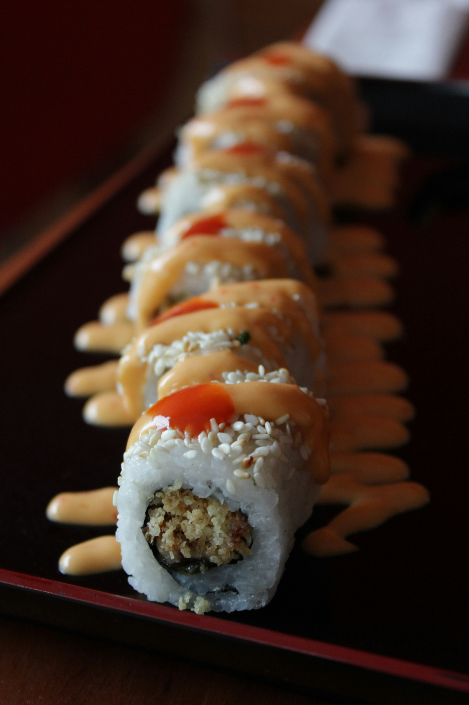

Gallery
Explore our menu online before you even step through our doors, and get a glimpse of the mouthwatering options awaiting you. With convenient online ordering and pickup options, enjoying your favorite dishes from Café Oasis has never been easier.
At CPCafe, we take pride in offering a diverse array of delectable dishes, each crafted with care and bursting with flavor. From our signature artisanal sandwiches to our tantalizing array of salads, soups, and hot entrées, there's something to delight every palate.
But CPCafe is more than just a place to eat – it's a gathering place for friends, family, and colleagues alike. Whether you're catching up over coffee and pastries or enjoying a leisurely lunch with loved ones, our warm and inviting atmosphere sets the stage for unforgettable moments.



Indulge in a world of flavors as you navigate through our diverse selection of dishes, thoughtfully crafted to tantalize your taste buds. From sizzling stir-fries to mouthwatering sandwiches, from aromatic soups to crisp salads bursting with freshness- there's something to please every palate.
And because we believe in supporting our community and the planet, many of our ingredients are sourced locally and sustainably, ensuring that every bite is not only delicious but also environmentally conscious.
So come on in, take a seat, and let us whisk you away on a culinary journey you won't soon forget. Welcome to CPCafe – where great food and good company come together to create memories that last a lifetime.


Me make, because we care